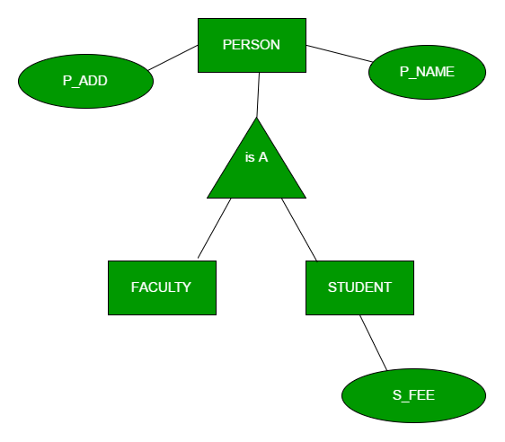
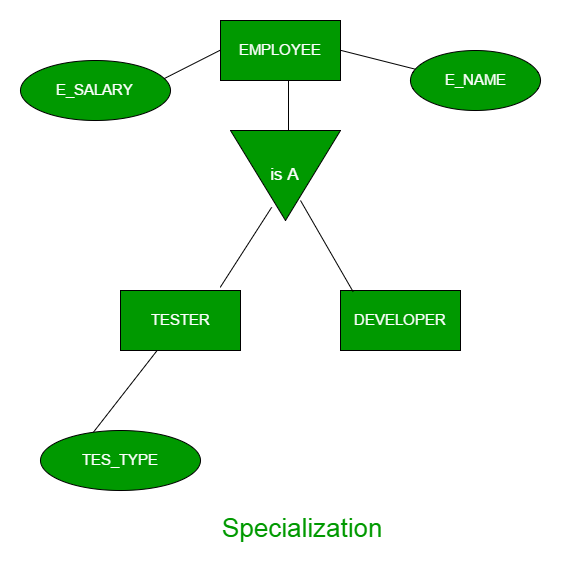
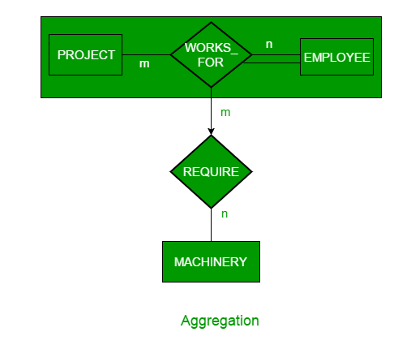

Prerequisite – Introduction of ER Model
Generalization, Specialization and Aggregation in ER model are used for data abstraction in which abstraction mechanism is used to hide details of a set of objects.
Generalization –
Generalization is the process of extracting common properties from a set of entities and create a generalized entity from it. It is a bottom-up approach in which two or more entities can be generalized to a higher level entity if they have some attributes in common. For Example, STUDENT and FACULTY can be generalized to a higher level entity called PERSON as shown in Figure 1. In this case, common attributes like P_NAME, P_ADD become part of higher entity (PERSON) and specialized attributes like S_FEE become part of specialized entity (STUDENT).

{kind=link}
Specialization –
In specialization, an entity is divided into sub-entities based on their characteristics. It is a top-down approach where higher level entity is specialized into two or more lower level entities. For Example, EMPLOYEE entity in an Employee management system can be specialized into DEVELOPER, TESTER etc. as shown in Figure 2. In this case, common attributes like E_NAME, E_SAL etc. become part of higher entity (EMPLOYEE) and specialized attributes like TES_TYPE become part of specialized entity (TESTER).

{kind=link}
Aggregation –
An ER diagram is not capable of representing relationship between an entity and a relationship which may be required in some scenarios. In those cases, a relationship with its corresponding entities is aggregated into a higher level entity. For Example, Employee working for a project may require some machinery. So, REQUIRE relationship is needed between relationship WORKS_FOR and entity MACHINERY. Using aggregation, WORKS_FOR relationship with its entities EMPLOYEE and PROJECT is aggregated into single entity and relationship REQUIRE is created between aggregated entity and MACHINERY.

{kind=link}